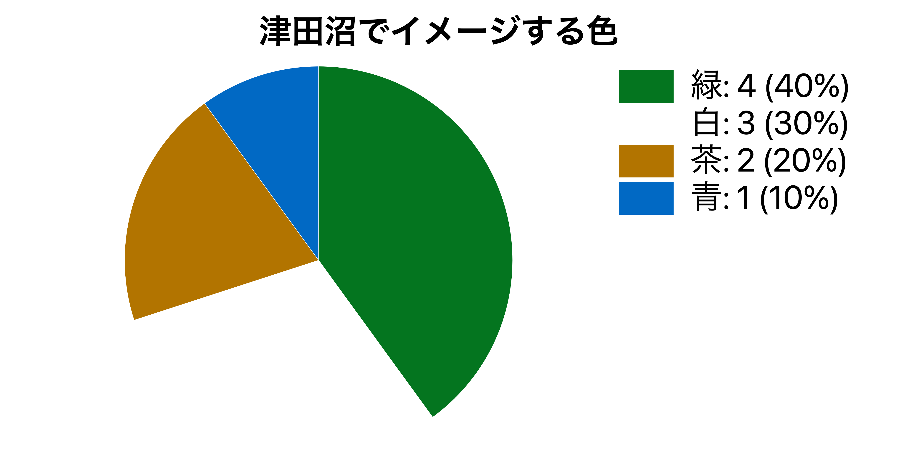
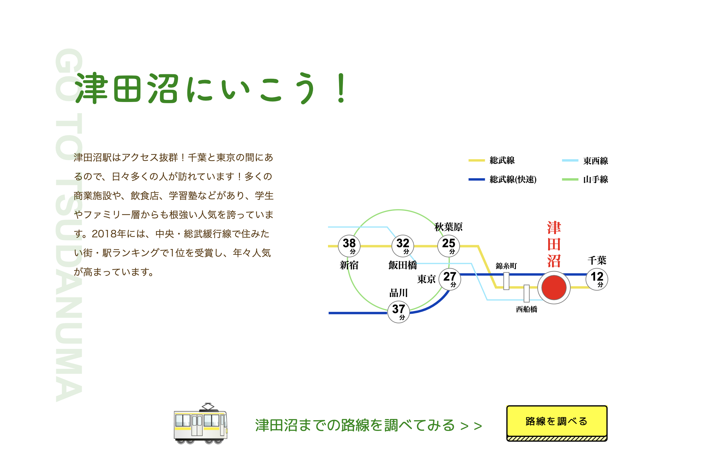

津田沼PR(個人制作)

使用技術: html CSS JavaScript Jquery XD GIMP
担当: 全て
作品について
実際に津田沼に住む人から、津田沼で連想する色や津田沼のいいところなどのアンケートをとり、津田沼に住む人の意見を取り入れてWEBサイトを制作しました。アンケートの結果から津田沼は交通の便がよく大型商業施設が多いことが強みだとわかったので、大型商業施設の持つクリーンなイメージを出すために背景の色は白を選択、津田沼の人がイメージする津田沼の色が緑で、街に自然があるイメージが強かったことから文字の色などは緑を使用することで自然なイメージを出しました。

